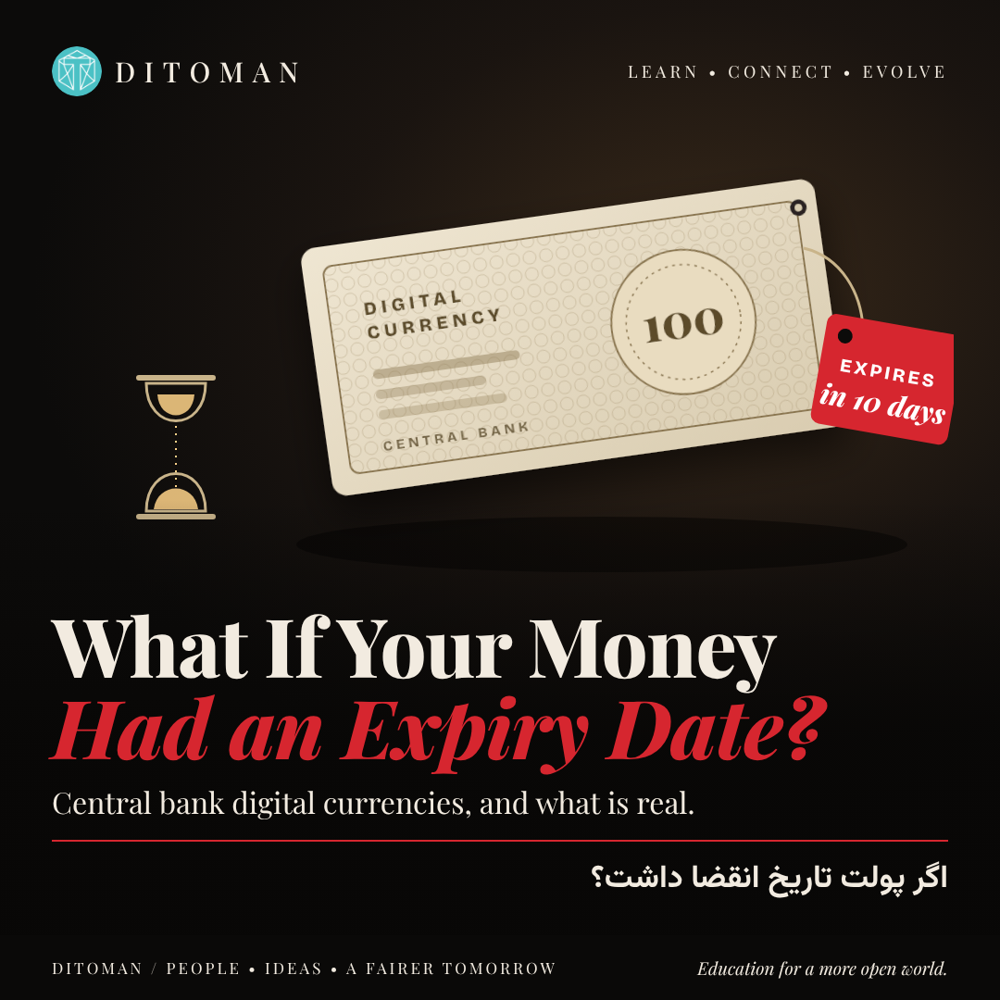

What If Your Money Had an Expiry Date?
Central bank digital currencies and "programmable money": what they are, how far they have gone, what is real and what is exaggerated, and where Iran's digital rial stands.
Lesson Content
Read the lesson in English or Persian. This structure is designed for future quiz, score, reputation, and reward systems.
You may have seen a post that starts with a question: what if your money came with an expiry date? Spend it by Friday, or it disappears. Spend it only at approved shops, or it will not work.
It sounds like science fiction, but it touches something real. Central banks around the world are studying a new form of money, and some of it can, technically, carry rules like these. This lesson separates what is real from what is exaggerated.
01. What a CBDC actually is
A central bank digital currency, or CBDC, is digital money issued directly by a country's central bank. It is the digital version of the banknote in your wallet.
That is different from the money in your bank account today. When you see a balance in a banking app, that is a promise from your bank. A CBDC would be a direct claim on the central bank itself, the same as cash.
It is also very different from Bitcoin. Bitcoin has no issuer and no one who can change its rules alone. A CBDC is issued, controlled and designed by the state.
02. How far has it gone?
According to the Atlantic Council's tracker, 146 countries and currency unions, together over 98% of the world economy, are exploring a CBDC. That is the source of the large numbers you see in posts.
But exploring is not launching. By the same tracker, only three countries have fully launched one: the Bahamas, Jamaica and Nigeria. Around 41 pilots are running. China's digital yuan is the largest pilot in the world.
The euro area is preparing a digital euro. A European Parliament committee approved its position in June 2026, and the earliest launch being discussed is 2029. The United States went the other way: an executive order in January 2025 banned work on a US CBDC.
03. What "programmable money" means
Ordinary money does not care what you do with it. Programmable money is money with rules written into it. The rule travels with the money itself, not with the person.
Examples of possible rules: this money can only be spent before a certain date. Only at certain kinds of shops. Only by this person and not transferred. Only for a stated purpose, such as transport or food.
Some uses are harmless or even helpful: a payment that releases automatically when goods arrive, or aid money that reaches the right people. The concern is about who writes the rules, and whether they can be applied to everyday money without your agreement.
04. Real or exaggerated?
The expiry date is real, but only in trials. In January 2021, Shenzhen in China gave 100,000 residents 200 digital yuan each by lottery. The money could be spent only between 7 and 17 January at designated merchants, could not be transferred, and unused amounts were withdrawn. In 2021 Chengdu gave out digital yuan that could only be used for public transport and shared bikes.
These were promotions designed to test the system and encourage spending, not rules on people's normal savings. No country has put an expiry date on everyday CBDC balances.
The European Central Bank has said the digital euro would not be programmable money of this kind. Whether every government keeps that promise in the future is a fair question, and a reason the design and the law around CBDCs matter.
05. Iran's digital rial
The Central Bank of Iran first announced plans in 2018. A pilot began in 2023 on Kish Island, covering person-to-person transfers and merchant payments, and it has since been extended. The digital rial is pegged one-to-one to the ordinary rial and is meant for domestic use.
Public information about the pilot is limited: there are no independently verified figures for how many people use it, and no public date for a nationwide launch. For now, it is a test, not money most Iranians handle.
06. The real questions to ask
Whether a CBDC is good or bad depends almost entirely on its design and on the law around it. These are the questions that matter, for any country:
Privacy: who can see your payments, and under what rules? Limits: is there a cap on how much you can hold? The digital euro plans one, to protect banks. Programmability: can conditions be placed on ordinary balances, or only on specific payments you agree to? Offline use: does it work without internet, like cash? Cash: does physical cash remain available alongside it?
What to take from this
A CBDC is a tool. The same technology can make payments cheaper and faster, or give whoever controls it far more visibility and power over money than cash ever did. Which one you get is decided in the design, and in the law.
When you see a dramatic claim about digital money, ask three things: is this a trial or the real system, which country, and what does the law actually say?
شاید پستی دیده باشید که با این پرسش شروع میشود: اگر پولت تاریخ انقضا داشت چه؟ تا جمعه خرجش کن، وگرنه ناپدید میشود. فقط در فروشگاههای مجاز خرجش کن، وگرنه کار نمیکند.
به داستان علمیتخیلی شبیه است، اما به چیزی واقعی اشاره میکند. بانکهای مرکزی در سراسر دنیا در حال بررسی نوع تازهای از پول هستند که از نظر فنی میتواند چنین قاعدههایی داشته باشد. این درس واقعیت را از اغراق جدا میکند.
۰۱. CBDC دقیقاً چیست
پول دیجیتال بانک مرکزی یا CBDC، پولی دیجیتال است که مستقیم توسط بانک مرکزی یک کشور منتشر میشود. نسخهی دیجیتال همان اسکناسی است که در کیف پولتان دارید.
این با پول حساب بانکی امروز فرق دارد. موجودیای که در اپ بانک میبینید، تعهد بانک شماست. CBDC ادعای مستقیم بر خود بانک مرکزی است، درست مثل اسکناس.
با بیتکوین هم کاملاً فرق دارد. بیتکوین منتشرکننده ندارد و هیچکس بهتنهایی نمیتواند قواعدش را تغییر دهد. CBDC را دولت منتشر میکند، کنترل میکند و طراحی میکند.
۰۲. تا کجا پیش رفته؟
طبق ردیاب اتلانتیک کانسل، ۱۴۶ کشور و اتحادیهی پولی که روی هم بیش از ۹۸٪ اقتصاد جهان را تشکیل میدهند، در حال بررسی CBDC هستند. عددهای بزرگی که در پستها میبینید از همینجا میآید.
اما بررسی کردن با راهاندازی فرق دارد. طبق همین ردیاب، فقط سه کشور CBDC را کامل راهاندازی کردهاند: باهاما، جامائیکا و نیجریه. حدود ۴۱ طرح آزمایشی در جریان است و یوان دیجیتال چین بزرگترین آنهاست.
منطقهی یورو در حال آمادهکردن یورو دیجیتال است. یک کمیسیون پارلمان اروپا در ژوئن ۲۰۲۶ موضعش را تصویب کرد و زودترین زمان راهاندازی که مطرح است ۲۰۲۹ است. آمریکا مسیر مخالف را رفت: یک فرمان اجرایی در ژانویهی ۲۰۲۵ کار روی CBDC آمریکا را ممنوع کرد.
۰۳. «پول برنامهپذیر» یعنی چه
پول معمولی برایش مهم نیست با آن چه میکنید. پول برنامهپذیر پولی است که قاعدههایی داخلش نوشته شده. قاعده همراه خود پول جابهجا میشود، نه همراه آدم.
نمونههایی از قاعدههای ممکن: این پول فقط تا تاریخ مشخصی خرج میشود. فقط در فروشگاههای خاص. فقط توسط همین شخص و قابل انتقال نیست. فقط برای هدفی مشخص مثل حملونقل یا غذا.
بعضی کاربردها بیخطر یا حتی مفیدند: پرداختی که با رسیدن کالا خودکار آزاد میشود، یا کمک مالیای که به دست افراد درست میرسد. نگرانی این است که چه کسی قاعدهها را مینویسد، و آیا میشود آنها را بدون رضایت شما روی پول روزمره اعمال کرد.
۰۴. واقعی یا اغراقشده؟
تاریخ انقضا واقعی است، اما فقط در آزمایشها. در ژانویهی ۲۰۲۱ شهر شنژن چین با قرعهکشی به ۱۰۰ هزار نفر هر کدام ۲۰۰ یوان دیجیتال داد. این پول فقط از ۷ تا ۱۷ ژانویه و فقط در فروشگاههای مشخص خرج میشد، قابل انتقال نبود، و مبلغ خرجنشده پس گرفته شد. در ۲۰۲۱ شهر چنگدو یوان دیجیتالی داد که فقط برای حملونقل عمومی و دوچرخهی اشتراکی قابل استفاده بود.
اینها طرحهای تبلیغاتی برای آزمایش سیستم و تشویق خرجکردن بودند، نه قاعدهای روی پسانداز معمولی مردم. هیچ کشوری روی موجودی روزمرهی CBDC تاریخ انقضا نگذاشته است.
بانک مرکزی اروپا گفته که یورو دیجیتال چنین پول برنامهپذیری نخواهد بود. اینکه همهی دولتها در آینده به این قول پایبند بمانند پرسش منصفانهای است، و دلیلی است که طراحی و قانون پشت CBDC اهمیت دارد.
۰۵. ریال دیجیتال ایران
بانک مرکزی ایران اولین بار در ۲۰۱۸ برنامهاش را اعلام کرد. آزمایش در ۲۰۲۳ در جزیرهی کیش شروع شد و انتقال فرد به فرد و پرداخت به فروشگاه را پوشش میدهد. از آن زمان تمدید شده است. ریال دیجیتال یکبهیک با ریال معمولی برابر است و برای استفادهی داخلی طراحی شده.
اطلاعات عمومی دربارهی این آزمایش محدود است: آمار مستقلی از تعداد کاربرانش منتشر نشده و تاریخ عمومی برای راهاندازی سراسری اعلام نشده. فعلاً یک آزمایش است، نه پولی که بیشتر ایرانیها با آن سروکار دارند.
۰۶. پرسشهای واقعی
خوب یا بد بودن یک CBDC تقریباً کامل به طراحیاش و قانون پشتش بستگی دارد. اینها پرسشهایی است که برای هر کشوری اهمیت دارد:
حریم خصوصی: چه کسی پرداختهای شما را میبیند و با چه قاعدهای؟ سقف: آیا برای مقدار نگهداری سقف وجود دارد؟ یورو دیجیتال برای حفاظت از بانکها سقف دارد. برنامهپذیری: آیا میشود روی موجودی معمولی شرط گذاشت، یا فقط روی پرداختهای مشخصی که خودتان قبول میکنید؟ استفادهی آفلاین: آیا مثل پول نقد بدون اینترنت کار میکند؟ پول نقد: آیا اسکناس در کنارش باقی میماند؟
چه برداشتی کنیم
CBDC یک ابزار است. همین فناوری میتواند پرداخت را ارزانتر و سریعتر کند، یا به کسی که کنترلش را دارد دید و قدرتی بر پول بدهد که پول نقد هرگز نداشت. اینکه کدام را بگیرید در طراحی و قانون تعیین میشود.
وقتی ادعای هیجانانگیزی دربارهی پول دیجیتال دیدید، سه چیز بپرسید: این آزمایش است یا سیستم اصلی؟ کدام کشور؟ و قانون واقعاً چه میگوید؟
CBDCs and Crypto Are Not the Same Thing
A CBDC is state money in digital form. Bitcoin and tokens such as TMN are not issued by any central bank, and their rules are set by public code rather than by a government. That difference is exactly why this lesson matters for anyone learning about crypto.
Ditoman takes no political position on any government's monetary policy. We explain how the systems work and what the evidence shows.
CBDC پول دولتی در شکل دیجیتال است. بیتکوین و توکنهایی مثل TMN را هیچ بانک مرکزیای منتشر نمیکند و قواعدشان را کد عمومی تعیین میکند، نه دولت. دیتومان دربارهی سیاست پولی هیچ دولتی موضع سیاسی نمیگیرد.
Key Concepts
- Central bank digital currency (CBDC)
- Bank money versus central bank money
- Programmable money
- Pilot versus launch
- Holding limits and privacy
- Digital rial
- CBDC versus cryptocurrency
Learning Objectives
- Explain what a CBDC is and who issues it.
- Tell the difference between exploring, piloting and launching.
- Describe what makes money programmable.
- Separate real trial examples from exaggerated claims.
- Name the design questions that decide whether a CBDC is safe for users.
Future Quiz Bank
These questions are prepared for the future Ditoman quiz and participation system. They may later support learning scores, reputation layers, and possible TMN reward eligibility.
Question 1
Who issues a CBDC?
A. A private company
B. The country's central bank
C. Bitcoin miners
D. Commercial banks only
Correct answer: B
Question 2
According to the Atlantic Council tracker, how many countries have fully launched a CBDC?
A. 146
B. 41
C. 3
D. None
Correct answer: C (the Bahamas, Jamaica and Nigeria)
Question 3
What makes money "programmable"?
Correct answer: Rules written into the money itself, for example an expiry date or limits on where it can be spent.
Question 4
True or False: China's digital yuan balances expire for everyone.
Correct answer: False. Expiry dates were used in limited promotional trials, such as Shenzhen in January 2021, not on everyday balances.
Question 5
Which question matters most when judging a CBDC?
A. Its colour and logo
B. Its design and the law around it: privacy, limits, programmability, offline use
C. How fast its price rises
D. How many countries talk about it
Correct answer: B
Sources
- Atlantic Council, Central Bank Digital Currency Tracker (figures as of May 2026)
- Finance Magnates, Shenzhen digital yuan giveaway (January 2021)
- The Block, Chengdu programmable digital yuan test (July 2021)
- Euronews, European Parliament committee backs the digital euro (June 2026)
- Nasdaq, US executive order banning a CBDC (January 2025)
- CBDC Wiki, Iran digital rial status (March 2026)
Instagram Summary
This lesson was first introduced on Ditoman Instagram. The Instagram version gives a short visual summary, while this page provides the full learning version.
خلاصه تصویری این درس ابتدا در اینستاگرام Ditoman منتشر شد. نسخه اینستاگرام یک معرفی کوتاه و تصویری است، اما این صفحه نسخه کامل آموزشی آن است.